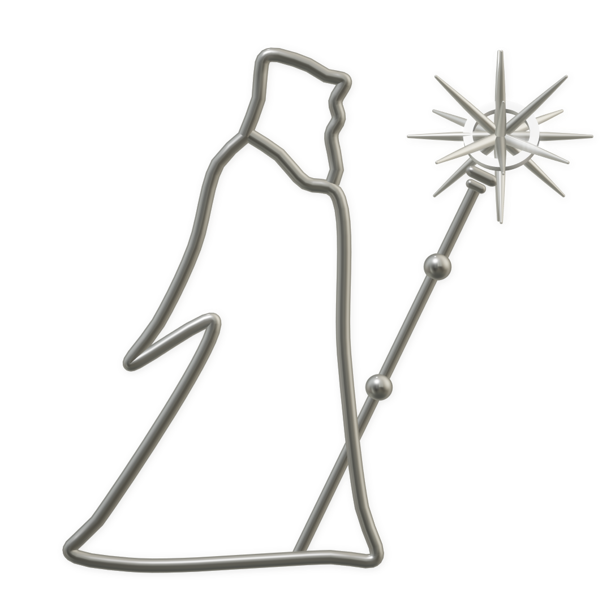

Ground the claim
Start from a current product, build, operating fact, or named source.

7 HERMETIC LABSPublic communicationsInformation has an owner
7 Hermetic Labs coordinates product facts, public communication, and contributor work across a portfolio of distinct projects. This is the front door; the working studio is organized separately.
Not a general information portal.
Portfolio coordination
The communications studio keeps evidence, claims, audiences, approvals, and response inside the project that owns them.
Working principles
Start from a current product, build, operating fact, or named source.
Contributors prepare, operators coordinate, and accountable owners approve.
The public front door explains the system. The studio carries the working context.
Communications studio
Explore the project map, public-safe campaign projection, contribution lanes, build records, and scorecard experience.